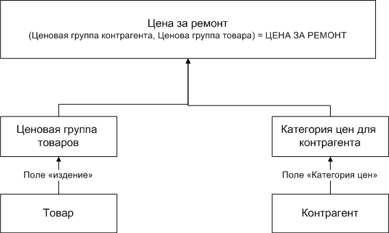

Цена за ремонт одной единицы товара
Определяется в справочнике "Цена за ремонт". Цена за ремонт изделия для контрагента определяется не напрямую. Все изделия входят в разные ценовые группы (справочник Ценовые группы товаров), также и контрагенты привязаны к группам (справочник Категории цен для контрагентов). Таким образом в справочнике "Цена за ремонт" есть три поля которые необходимо заполнить: "Ценовая группа товара", "Ценовая категория контрагента" и соответственно Цена (см. схему).

На схеме указано что Цена за ремонт указана для Ценовой группы товара и Ценовой категории контрагента. Поэтому что бы для контрагента Х поставить цену ремонта на товар Y необходимо указать товару его ценовую группу (заполнить поле Изделие у товара, или воспользоваться разделом "Ценовые группы товаров"), указать контрагенту его ценовую категорию (заполнить поле Ценовая категория у Контрагента) и наконец в справочнике "Цена за ремонт" поставить нужную цену за ремонт выбранной ценовой группы товара, для выбранной ценовой категории контрагента.
Например. Для контрагента "Тестовый контрагент" мы хотим установить цену ремонта УШМ MAG-1105 в размере 300 руб. В справочнике "Ценовые группы товаров" заводим запись УШМ (это будет группа в которую мы запишем все УШМ), затем товар MAG-1105 заносим в эту группу (сделать это можно в разделе Товары - Ценовые группы товаров). Затем создаём ценовую категория для контрагента в справочнике "Категории цен для контрагентов", назовём её "Стандарт электроинструмент" и в карточке контрагента "Тестовый контрагент" указываем эту ценовую группу в поле "Категория цен". Таким образом у нас готова ценовая группа товаров УШМ в которой записан наш товар MAG-1105 и готова категрия цен "Стандарт электроинстумент" к которой относится мастерская "Тестовый контрагент". Последнее что необходимо сделать это зайти в справочник "Цена за ремонт" и указать что ценовая группа "УШМ" в категории "Стандарт электроинструмент" стоит 300.